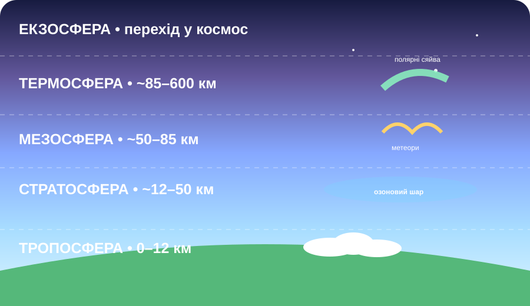

Що Ви бачите на справжньому фото з орбіти?
Спостерігайте, не називаючи шарів
На фото горизонт не має одного кольору: біля Землі видно теплі смуги, вище — сині, далі — майже чорний космос.
Який висновок найкраще випливає саме зі спостереження?
Доказ із NASA
NASA описує п’ять головних шарів атмосфери, що відрізняються температурою, складом і густиною. Тропосфера містить майже всю погоду; у стратосфері міститься озоновий шар; у мезосфері згорає більшість метеорів; термосфера пов’язана з полярними сяйвами.
Джерело: NASA, Earth’s Atmosphere: A Multi-layered Cake.
Повітря — це не «кисень»
≈78% N₂ • ≈21% O₂ • ≈1% інші гази
Біля поверхні сухе повітря складається переважно з азоту й кисню. До малої частки «інших» входять аргон, CO₂, неон та інші гази. Вміст водяної пари змінний.
Підніміться крізь атмосферу

погода
озон
метеори
сяйва
перехід у космос
Зіставте ознаку з шаром
Озоновий шар: захисник угорі, забруднювач унизу

Справжні супутникові дані
Фіолетові й сині області показують низькі значення загального вмісту озону над Антарктидою.
NASA Earth Observatory • Aura / OMIРозберіть суперечність
Близько 90% атмосферного озону міститься у стратосфері. Там O₃ поглинає значну частину шкідливого УФ-випромінювання. Але озон біля земної поверхні є забруднювачем повітря.
Чому фраза «озон завжди корисний» неправильна?
Атмосфера працює як система

Хмари в тропосфері
Супутник Aqua/MODIS спостерігав хмарний покрив над Тихим океаном.
NASA Earth Observatory14 секунд: глобальний вигляд шарів
Courtesy video: NASA • DVIDS • 00:14
Чому атмосферу ділять на окремі шари?
Вам дали чотири факти: 1) погода зосереджена внизу; 2) озон поглинає УФ у стратосфері; 3) метеори переважно згорають у мезосфері; 4) у термосфері спостерігають полярні сяйва. Який висновок логічно сильніший?
Тепер збираємо поняття
Атмосфера
Газова оболонка Землі, яку утримує земне тяжіння. Біля поверхні сухе повітря містить приблизно 78% азоту, 21% кисню і близько 1% інших газів.
Чому є шари?
На різних висотах змінюються температура, густина, склад та взаємодія з сонячним випромінюванням. Тому виділяють тропосферу, стратосферу, мезосферу, термосферу й екзосферу.
Озоновий шар
Область стратосфери з підвищеною концентрацією O₃. Стратосферний озон поглинає значну частину ультрафіолетового випромінювання Сонця.
Важлива точність
Межі шарів не є «стінами». Наведені висоти приблизні та змінюються з широтою, сезоном і станом атмосфери.
Сформулюйте науковий висновок
Питання: Чому поділ атмосфери на шари має фізичний зміст, а не є просто способом запам’ятовування?
§24 + електронний підручник
Опрацюйте §24. У 4–6 реченнях дайте відповідь: «Чому атмосферу ділять на окремі шари?» Наведіть щонайменше два докази з уроку.
Відкрити електронний підручник →